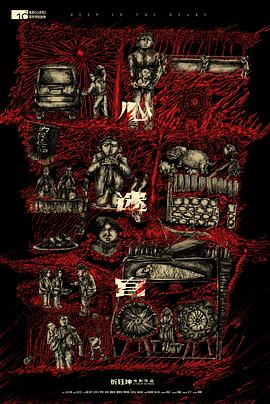
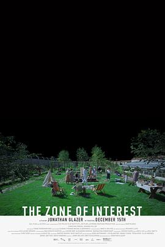
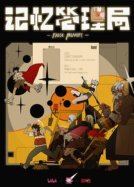
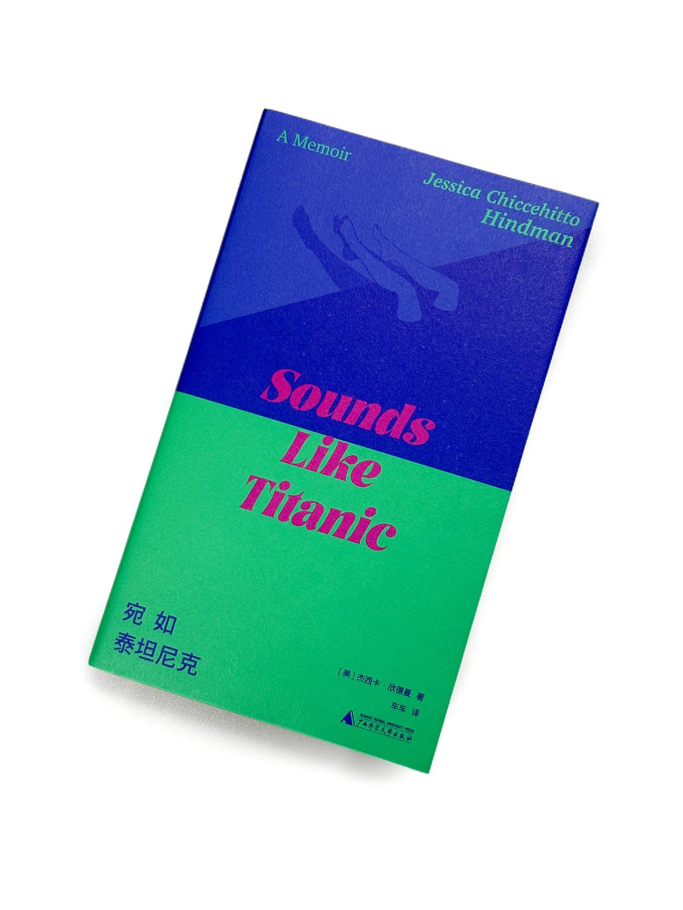
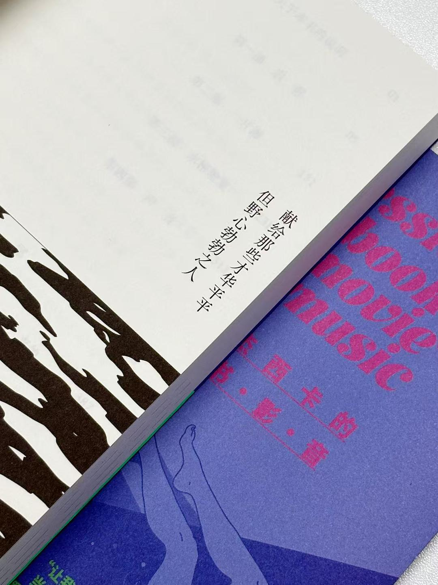
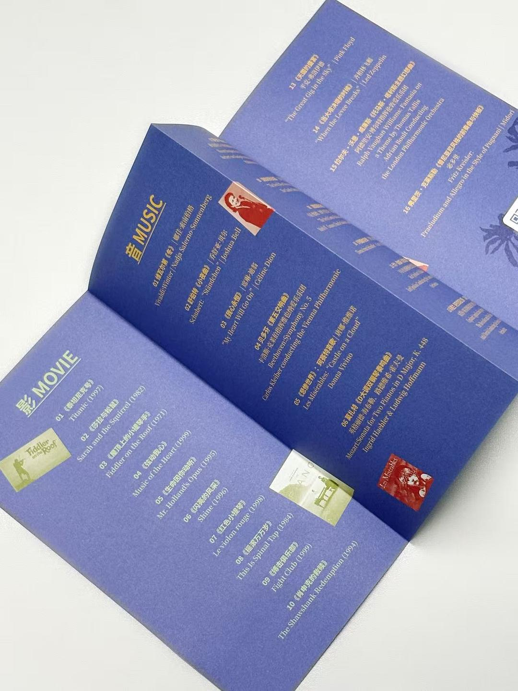
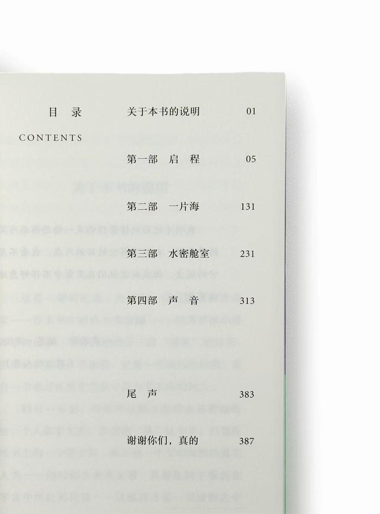
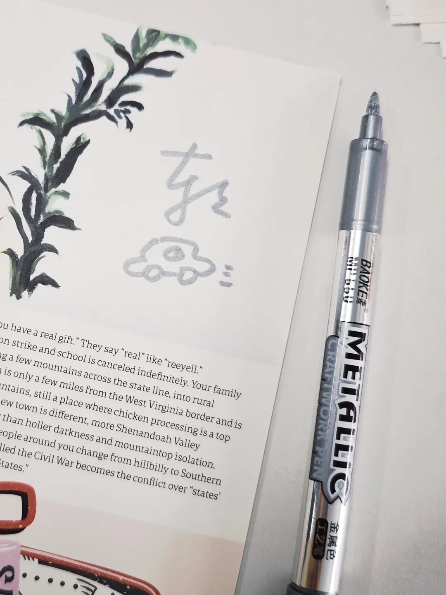

2026年9月
广播发布后不可编辑，所以每条都是那一刻的原话。
2026-09-29 15:49:58
看过 一个男人和一个女人 ★★★★☆
摄影很漂亮，把灯火下的香港拍得很美。最喜欢大堂经理，就算戴着口罩也要美美打扮服务好每一位客人。野猪的意象同《八佰》里的白马一样，借喻着人的心事。只不过角色的设定上安排着过多的戏剧冲突时反倒容易出戏。对那个时候的文艺作品还是太少了，倒是拍酒店也会同质化，如何表现好视频通话这一对白的确很难。魔岩三杰如今只剩下了窦仙人，物是人非弄得我也不知如何铭记那段时光了。
2026-09-28 23:01:45
看过 从21世纪安全撤离 ★★★★☆
电影里的声音总是错位的，例如侏儒的童声、例如圆号吹出的二胡、例如汽车鸣出的却是汽笛声。延续《李献计历险记》的创意，依旧穿越时空依旧靠画幅来进行深层叙事，但这一回使用了“实拍加上动画”的形式，更漂亮也很精彩了。至于九九年，电影充满了怀念之情，甚至直至满溢。摄影真好看。
2026-09-28 19:41:15
看过 迷墙 ★★★☆☆
老妈随便点开的，三千万当作噱头，郭大叔又是一口方言怪腔调，整个家每个人都好会阴阳怪气哦。这么白日梦的剧情却写得如此一地鸡毛，真可惜。ep3还que了一下郭大叔自己笑死。不懂摄影为什么这么执着于大广角怼脸拍。
2026-09-28 19:37:35
说
夜师傅可爱捏。靠近了就飞走了。可惜捏。

2026-09-28 18:15:37
在看 迷墙 ★★★☆☆
老妈随便点开的，三千万当作噱头，郭大叔又是一口方言怪腔调，整个家每个人都好会阴阳怪气哦。
2026-09-28 17:04:59

忽视掉最后的一段字，电影整体的故事连环巧妙。简单说就是三段有限视角叙事，儿子、情妇、村长，但这三段的顺序却又是完全不能调换的，因为给观众的信息也是逐层深入的。镜头语言也很老练，喜欢老孙头出殡的那段长镜头，也喜欢清冷坟头棺材横的摄影。小县小村的妆造好令人眼熟。其实没怎么懂最后烧香的结尾是什么作用，本来的故事已经很圆满了。
2026-09-27 23:52:43
看过 特立独行 ★★★★☆
张老师真是县长专业户了。前半的错位笑话的确蛮乐呵人的，但越往后越现实也越教人苦笑甚至笑不出来了。许多人诟病的特效其实完成度还挺高的，至少不那么出戏甚至颇有反讽意味。只是最后的反转不懂何意味，辛辣的讽刺在此停滞，这样的结构性的压迫果真只能怪罪到个人身上么。
2026-09-25 16:41:49
看过 敦煌英雄 ★★★☆☆
沙场逐车戏很难不让人与经典的《疯狂的麦克斯：狂暴之路》相比较，这里可圈可点，比较喜欢的是小月牙的弓格术，教人看得很舒服。后期的决战太扯淡，完全不知是为何胜利的。其实不怎么喜欢如何如何美化当时的大唐，若不是朝廷腐败，又怎会有安史之乱。美术与摄影都很漂亮。章宇打戏也不错嘛。
2026-09-24 23:00:07
看过 李献计历险记 ★★★★☆
很厉害的故事，总觉得教人想入非非。窄窄的分镜在烟花升起的一刻猛地一竖，好动人。音乐使用得耳熟，能听出的有pillows的歌、bwv1007、东方红、黄河大合唱、bwv147。玩了蓝蓝路与杀死比尔等的哏，蛮好。
2026-09-24 22:18:13
在看 咒术回战 第三季 / 呪術廻戦 死滅回游 前編 ★★★★☆
摄影太抢眼，不过也的确漂亮，ep1里的慢门与浅景深都做得很好看。分镜里依旧长廊仙人，用大透视的单灭点来增加画面的纵深感。值得说道的是这次剪辑很利好故事的讲述，令我十分舒畅。因此在众多优点下故事反倒不太美妙了。
2026-09-24 17:06:16
在看 幸福伽菜子的快乐杀手生活 第二季 / 幸せカナコの殺し屋生活 2 ★★★★☆
ep1还是很欢快呀，玲奈怎么还是这么可爱！动作戏依旧是硬伤，人太多了反而像站桩。真不理解霓虹人如此读空气的社交。
2026-09-23 22:17:06
 在看 百年孤独 第二季 / Cien años de soledad Season 2 ★★★★★
在看 百年孤独 第二季 / Cien años de soledad Season 2 ★★★★★
我很喜欢这部剧里摄像机的运动与打光的考究。这一季音乐更有了记忆点。服化道依旧封神。恐怕黑泽明来拍也不会有这般好。ep1印象深的有喝酒背后斗殴的镜头与推镜头面对上校举枪。
2026-09-19 22:27:57
 看过 我看见两朵一样的云 ★★★☆☆
看过 我看见两朵一样的云 ★★★☆☆
开头寻找漏洞的戏拍得不错，整体摄影在线但美术对未来的想象过于陈旧了，未来的系统可视化一定得设计得可读性很差么。王源的演技只在《地久天长》里领教过，在文淇面前更像个新兵蛋子了。结尾处理得反倒没《去你的岛》好，观众对主角之间的爱情感受得浅薄并且程式。到底导演留过学，好些台词像翻译，好些场景似异国，现在哪还有这样打劫的。配乐选得都不错，英文歌偏多。
2026-09-19 15:01:03
看过 年会不能停！2 ★★★☆☆
笑点无论尬笑还是巧思都能让我乐得不行，挺好，但是摄影也太随便了吧！几场戏都有摄影机的影子，这灯光和审片都脱不开干系了吧！白客依旧演得熟练，只是我高叶在海报上是C位，影片里的戏份也太少了吧，几套装扮和妆容都蛮好看的，但梁安妮已经是好几年前的时候了。所谓黑粉也是粉，徐云峰果真不愧MVP。新总的公司口号碰瓷懂王也都点好笑了。影片依旧核心问题从上部保留至今，就是没有赤裸裸地点出主要矛盾。还是可惜啊！
2026-09-18 21:00:21
看过 觅踪寻迹 / Foot Fairy ★☆☆☆☆
过分无聊的电影，总体上想学习《杀人回忆》的叙事，但自己接二连三地对不上剧情，甚至结尾故弄玄虚地东施效颦，太雷人！况且每次给到尸体的镜头总要给伤口特写，这是何意味。两个小时果真浪费！
2026-09-15 22:13:07
在看 无职转生Ⅲ 到了异世界就拿出真本事 / 無職転生Ⅲ ～異世界行ったら本気だす～ ★★★★☆
质感又回s1了，开心。但每每想到 Eris 苦练时鲁迪正左手右手一个白妈妈一个蓝妈妈亲热真真没绷住。ep3厚涂风的ed很喜欢。
2026-09-15 11:50:01
读过 虚拟偶像、AI数字人与赛博生命 ★★★★☆
抽奖中的书，导言要研究的议题还蛮宏大的，诸如此类的情况的确也发生在我身上，因此看看这位all in“后人类”的刘老师会不会给出一个较实际的答案。对于后台幻觉的前景化我之前就颇多思考，比如《凉宫春日的忧郁》里制作委员会出现的SOS团、《轻音少女》的以HTT名义发行的专辑、《孤独摇滚》《BanG》之类流，以创作者的角度来说自己的名字不能明显大方出现在封面上是很可惜，但以此来造出一个她们存在着的梦又是值得的。只是这份梦易碎易醒。第六章里抛开人本立场，给AI冠上“近人类”的好听名头，但忘记了劳动是人的专属，因为最后所有的产物都要人来消费。所以直到终章大部分都在阐述现象爱你画大饼式地描绘未来。
2026-09-14 23:10:12
 看过 无职转生Ⅱ 到了异世界就拿出真本事 Part 2 / 無職転生Ⅱ ～異世界行ったら本気だす～ 第2クール ★★★★☆
看过 无职转生Ⅱ 到了异世界就拿出真本事 Part 2 / 無職転生Ⅱ ～異世界行ったら本気だす～ 第2クール ★★★★☆
草草的作画导致看点就只有故事了。咋开头面对过多少大是大非的鲁迪能被一个木偶吓成那样呢。ep17的意识流拍得真好。时间果然能治愈一切啊。ep22当年在父亲节左右播出，真是好地狱！人神虽说会后悔但也因此因祸得福救了蓝妈妈。白妈妈头发长了挺着肚子好有善解人意的人妻感。黄毛小孩姐讲话也太直接了吧，虽然蓝妈妈的确是小三上位，话又说回来，难道宽慰一个人必须得交合才可以么？依旧活在片尾的 Eris，期待第三季。
2026-09-11 22:56:48

无论是几次的色彩铺满还是音乐的使用，都很异常诡异。镜头尤其克制，除了不多的横移镜头，剩下竟都是固定机位，剪辑尤其流畅，不仅动作的衔接还有醒目的站位都能对应得上，这个好厉害。负片的使用教人眼亮，最后的回首更是神来之笔。一段受害者的镜头都没有的电影控诉了最深重的苦难。
2026-09-08 22:34:48
看过 夜王 ★★★★☆
看的导剪版，三次上下楼使困难全部打退，虽然注重讲夜总会的大的方面，但每位小姐自己的故事都没忘记讲述，群像的刻画真的很好。最后的智斗也拍得不错。标题土豪金风格果真好丑哦，不过结尾的MV挺不错的。关于丢失耳环的爱情教人心疼。
2026-09-07 21:48:35
看过 文学少女回忆录1：梦见少女的前奏曲 / “文学少女”メモワールⅠ -夢見る少女の前奏曲- ★★★☆☆
其实ova第一部就把小说埋的最大的伏笔给抖出来了很不好啊！
2026-09-06 22:53:01

我是作画豚啊，我就是要看这样的作画呀！简单的阴影二分实在太吃透视与结构的功底，ep1虽然没看懂但是看爽了。能说是当作flcl的代餐么。音乐很不错，加分项。但相较于短片，想讲的太多了反而完成度恐怕没短篇的高。ep3的分镜与动作设计都很棒啊。ep5里对剪辑台与记忆关系的创意很迷人，同时很中意对百重拿的日常物品与玩具在战斗的恰当作用。ep6的伏笔回收得蛮不错的，开始与flcl不同了。ep7飞翔的死蜻蜓其实是被困在了蛛网上这一幕教人拍案惊奇。整体很喜欢作画与音乐，故事可圈可点。
2026-09-04 22:24:30
看过 文学少女 今天的零食 初恋 / “文学少女”今日のおやつ 〜はつ恋〜 ★★★☆☆
制作得很用心，但画面表现上实在不算上乘。看学姐吃书吃得好快乐，弄得我也想尝尝了。
2026-09-04 20:59:17
转发
还蛮想读读看的。(⌒▽⌒)
    


2026-09-04 20:58:59
2026-09-03 23:08:30
看过 蔷薇修剪术 / Rosebush Pruning ★★★★☆
篇幅精短的疯人院的故事，一家没一个正常的。但作为电影来说，摄影拍得漂亮，音乐品味不错，装帧美丽亮眼，那么故事没什么很糟糕的地方了。话说什么牙能让人眼亮瞎，这段真是没绷住。在观察血红父亲时拍照提示音响起令人眼前一亮。最后要说就是长子承担了太多了吧。
2026-09-01 16:07:37
听过 Surrender ★★★★☆
环保碟，意外的惊喜。《want want》好像小狗在吠啊ort。